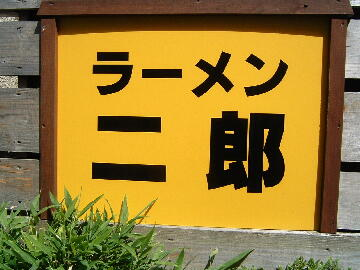
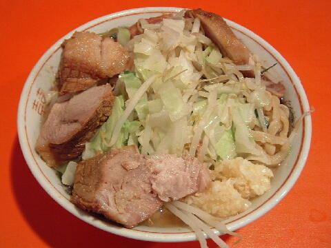
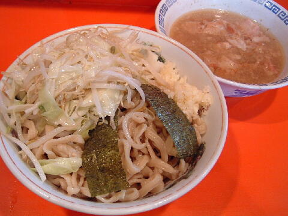

府中市 宮西町 1-15-5
土・日・祝
17：00〜23：00（L.O.10：30）

小ラーメン 700円、ブタ入りラーメン 850円
大ラーメン 800円、ブタ入り大ラーメン 950円
小つけ麺 800円、ブタ入り小つけ麺 950円
大つけ麺 900円、ブタ入り大つけ麺 1050円
大盛 100円
温泉玉子 100円、チーズ 100円
店員は、店主がひとり。
コショウ、トウガラシ。
レンゲ有、ティッシュ無。
BGMは、ラジカセよりのJ-WAVE。
トッピングは、二郎標準。
ラーメン二郎 府中店 情報 府中店のTwitter
「ラーメン二郎 府中」でヤフー検索
「ラーメン二郎 府中」でヤフーリアルタイム検索
「ラーメン二郎 府中」でグーグル検索

ブタ入り ニンニク
麺は、直系二郎の中で一番太いチジレた麺。小麦の風味とブチブチした食感がいい。量は少なめ。
ぶたは、ボリュームタップリ。当れば柔らかくてフワフワ。
スープは、野菜と豚の出汁がシッカリ出ていて醤油が効いたもの。
ヤサイは、モヤシ7キャベツ3の割合。大切りで丁度良いゆで方。
ニンニクは、中粒の生キザミニンニクで辛い。

ザルラーメン ニンニク
トッピングはラーメンと同じ。
つけ汁の丼には、細かく切られたぶたが入る。酸味は無い。
麺の丼には、麺と野菜と海苔。ニンニクはこちら。あつもり可。
ＰＣ店